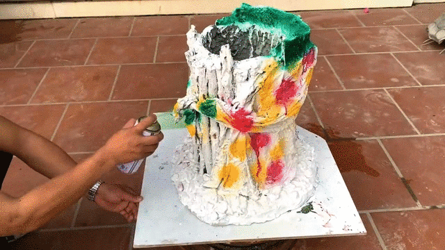
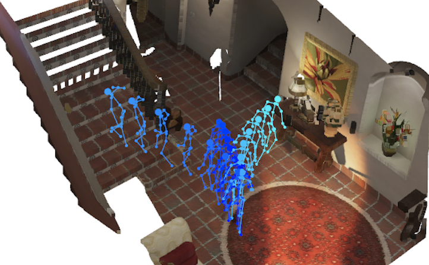
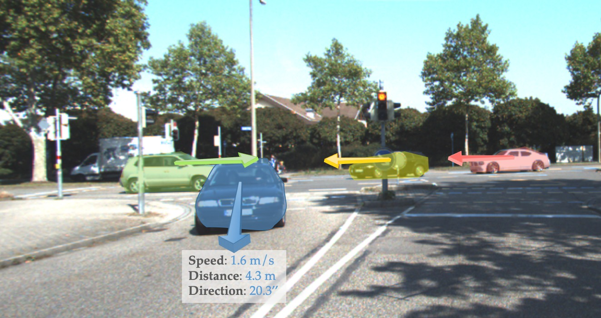
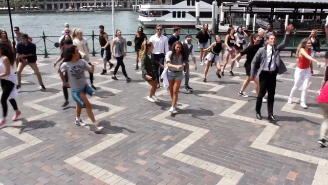
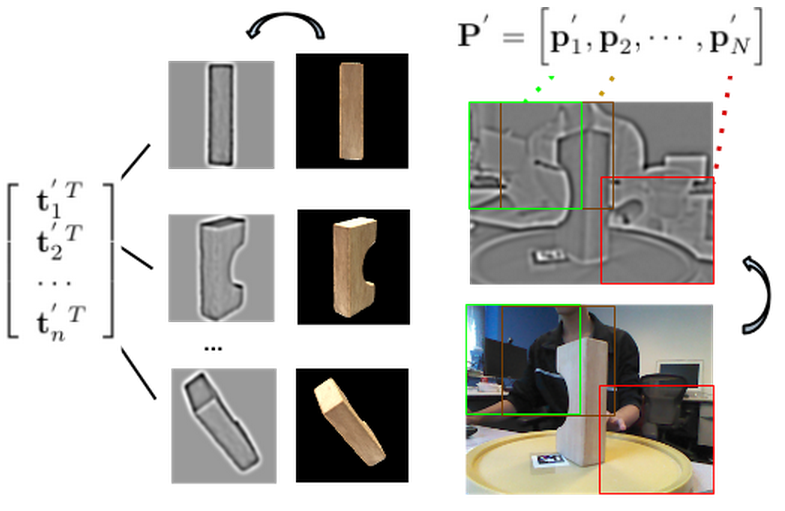

Publications
|  | Reconstructing Hand-Object Interactions in the WildZhe Cao*, Ilija Radosavovic*, Angjoo Kanazawa, Jitendra Malik ICCV 2021 |
|  | Long-term Human Motion Prediction with Scene ContextZhe Cao, Hang Gao, Karttikeya Mangalam, Qi-Zhi Cai, Minh Vo, Jitendra Malik ECCV 2020 (Oral) |
|  | Learning Independent Object Motion from Unlabelled Stereoscopic VideosZhe Cao, Abhishek kar, Christian Häne, Jitendra Malik CVPR 2019 |
 |
OpenPose: Realtime Multi-person 2D Pose Estimation using Part Affinity FieldsZhe Cao, Gines Hidalgo, Tomas Simon, Shih-En Wei, Yaser Sheikh TPAMI 2019 |
|  | Realtime Multi-person 2D Pose Estimation using Part Affinity FieldsZhe Cao, Tomas Simon, Shih-En Wei, Yaser Sheikh CVPR 2017 (Oral) |
|  | Realtime Scalable 6DOF Pose Estimation for Textureless ObjectsZhe Cao, Yaser Sheikh, Natasha Kholgade Banerjee ICRA 2016 |